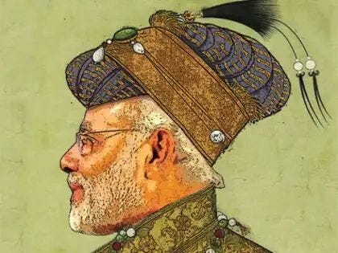
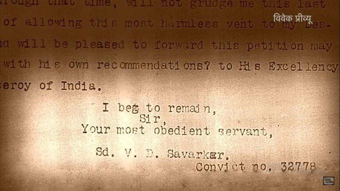
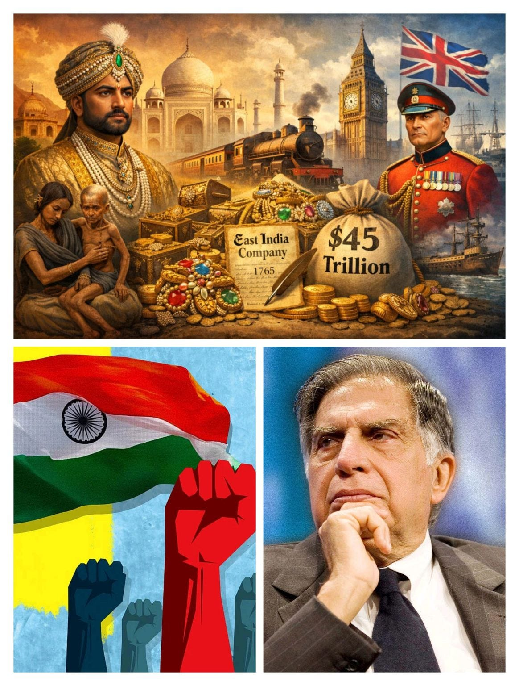

1. Question on Indian Nationalism
Who is NATIONALIST? (PART 1/3)

Imagine a future where Earth is one government, and a child in 2150 calls you "anti-Earth" because you loved your country. That wouldn't be fair. You cannot betray what does not yet exist.
The same applies to calling medieval rulers "anti-national." But let's play along and judge them by today's standards. By that logic, Khilji and Aurangzeb were the greatest NATIONALISTS.
They safeguarded India from foreign rule and made India so rich its GDP surpassed China's. Now you have a choice - call them nationalists and contradict every textbook, or call them anti-national and watch your standard collapse.
Let me open your eyes to your own HYPOCRISY
Can a nationalist cheer for DESTROYING PAKISTAN but ignore local INJUSTICE?
Yes.
Nationalism points outward - find an enemy, blame outsiders.
This is easy and exciting. But fixing internal injustice - caste apartheid, hunger, 1% holding 40% of wealth is hard. It requires looking at ourselves. Nationalism rewards those who look away. The same person who rages about borders is silent about the Dalit child denied water.
IMPORTANT COMMENTARY:-
- Sajal - Is a country greater than humanity? No. Has nationalism ever created an equal society? No. Nationalism draws lines - us versus them. While equality erases them. Nationalism can fight empire and give dignity to the colonized, but it has never built a just society. It creates winners and losers, insiders and outsiders, hierarchy with a flag on top. If nationalism cannot deliver equality and demands loyalty above humanity, why give it your deepest faith?
- Habeeb - nationalism is a concept that enables unity against oppression based on human values, culture, geography... To assume nationalism is undying blind loyalty to a flag or authority is the perversion of nationalism.
- Yash - the main conversation should be "what is the utility of nationalism"
- Habeeb - the question is "Why Nationalism" why not "Patriotism" - there's a big difference between both, yet most people conflate both.
- Yash - Patriotism means "Fatherland" and Nationalism means "Tribe" if you see the Greek word etymology. One is saying "I'm owned by my father and another is saying I'm owned by my tribe" .. both are true .. humans can't EXIST as individual, humans are mammals so they live in the group. The Question is : ARE humans BEYOND MAMMALS if YES then HOW and HOW much ??
- Nekmandeep - Nationalism in today's world is all about praising one's own country, and turning a blind eye to every unjust act going on.… And once you start pointing out the wrongs, you're declared 'Anti-National', without a second thought....
- Sajal - चालाक सत्ता हर मूर्ख को 'देशभक्त' - और हर बुद्धिमान को 'देशद्रोही' बना देती है
- Sandeep - Absolutely the truth. Educated people are silent when the Dalits don't get access to water or healthcare or when religious institutions of "others" get attacked. A couple of years back, one MLA of a ruling party in the UP had stopped the access of water to poor villagers after they were provided the same by a well meaning collector. The result - the officer was transferred.
- Akhilesh - It seems you need social context. Though the attempt is good, the thought process seems to be deficient. How? Your post rightly points to caste injustice, hunger, and inequality as urgent realities that demand attention. These are issues no society can afford to ignore. But the framing of nationalism here feels alienated from lived social struggles. Nationalism in India was not merely about “pointing outward”—it was also the force that mobilized millions for independence, built solidarity across regions, and anchored welfare reforms. To dismiss it wholesale is to erase the social context in which it operated as a vehicle for justice. The speculative “Earth Government 2150” analogy and the retrofitting of nationalism onto medieval rulers reveal a thought process that is abstract, irresponsible, and impractical. It retreats into rhetorical provocation rather than engaging with the messy realities of how communities actually negotiate identity and reform. The real challenge is not to pit nationalism against equality, but to reimagine nationalism in inclusive, socially grounded terms—one that erases internal hierarchies while still mobilizing collective strength.
- Sajal - I agree. But my point was not to critique nationalism in the end of itself. We need to redefine what nationalism is and who should be called a nationalist. Because India as a nation state was not formalised until 1947. So it directly raises a question on our identity.
- Arnav - Tread carefully in your argument there because while I agree with your post wholeheartedly, the moment you begin defining who a nationalist is and who isn't - you're playing into the very thing you're criticizing. The moment you define, you inadvertently also alienate. The moment you have an "exclusive" archetype of what a nationalist is - you also invent "exclusion".... exclusion is embedded in the very meaning of exclusive. What would help here is to go deeper into how ideologies are birthed - why do we have a distinct Pakistan and distinct India? Geographical borders are the physical manifestations of ideological borders (of course most ideological borders are baseless, unscientific beliefs). Nonetheless, even in a utopia, you'd still have small geographical units with a local government (think Panchayats) because presiding over a large landmass is just inefficient. Those panchayats may pool resources, may choose to help each other when one is in a resource constraint. Cooperation galore until someone tries to expropriate the other out of a very real human tendency which is called greed.
- Sajal - Yes, I know. It's absurd to critique nationalism and define nationalists at the same time. The core question is what's our IDENTITY. This post is actually a reaction to the exclusionary logic firstly built by Savarkar. Whole mainstream media is currently centred on his ideology and hence countless people are MARGINALIZED. The arguments presented here challenge the postmodern discriminatory interpretation.
- Akhilesh - Do you qualify?
- Sajal - Qualify in terms of what? India's democratic republic. We're common citizens and we should genuinely raise questions. Government is accountable to us. You might've heard that the best argument against democracy is a five-minute conversation with the average voter.
- Akhilesh - Responsibility comes before rights. Rights are meaningless without an enveloping cover of responsibility. Rights do not mean that you ask about rights and forget your duties or responsibilities.....Ask not what the Country has done for you; Ask what have you done for the country. There are many alien people in India, who only ask what the country has done for them, but never pause for a moment to reflect on what precious little they have done for the country.
- Habeeb - Responsibility doesn't come before rights - it is because of your Rights you have Responsibility. To conflate govt and country is fundamentally flawed - To ask what the govt has done is not the same as asking what the country has done. Nobody asks what a country does for them, they only ask what the govt is doing, as it is the Responsibility of every citizen to hold the govt accountable.
- Yash - wonderful articulation, 100% agree.
- Akhilesh - Do you qualify? Is it possible for you to support your claim with hard facts and logic? Let's debate.
- Arnav - Indeed. Sometimes I think there is indeed some weight to the conspiracy theory where they would rather have us debating over petty issues of identity and divert attention away from issues such as meaningful employment and quality of life. But people have to drop unscientific beliefs through self-effort and introspection.
- Habeeb - what do you mean by "do you qualify"? Every citizen is qualified to hold the govt accountable - it's not my claim, it's the constitution that gives every citizen this right. The hard facts you seek are enshrined in the constitution. If you're unaware of this basic aspect of the constitution there's nothing to debate.
- Akhilesh - What's the test standard for citizenship? Are you aware of the Constitution? Let's debate.
- Habeeb - After your initial response that clearly showed that your lack of understanding of the constitution - what debate are you seeking 🙄
- Yash - This is one of the FACT if you belong to dominant class of Urban India then knowing truth of any kind of OPTIONAL.
- Akhilesh - Let's explore the point raised by you. Could you detail.what is the test standard for being a citizen? You are trying to hide behind your Denial to discuss the issue and trying to trade in claims. Shows your depth.
- Yash - see GOVT schemes which directly benefits people they're always directed towards the lower class so they need to pick the side and remain political aware of brainwashed but Urban India middle class is in a very unique spot where their survival doesn't depend directly on Indian economy but depends upon US and 50% of population in top 20 cities belongs to upper caste Hindu (migration impact of British colonial era) so they don't have much incentives to know about problems of India, this is predominantly an issue of 1990-2023. Also known as IT outsourcing Colonialism of Narayana Murthy and BROS and alternatively in americans language (brahmin profiteering)
- Akhikesh - I get where you are coming from. Is it necessary to bring majority or minority perspective into the picture? Is it not enough to look at things from the perspective purely as an Indian? Is it necessary to bring society divisions like caste into the picture ? Is it not enough the look at things from the perspective of a member of the society? Is it always a question of US Vs Them? Is it not enough to look at it from the perspective of a team? I understand that you are coming from a deeply divisive angle, a fissured mindset. That's not a qualified playbook, or is it?
- Yash - I'm just stating the FACTS which can be verified by HISTORY you can talk about idealism it's your wish but acknowledgement of DIVIDE is the first step towards fixing the DIVIDE but FACTS can't be DENIED.
- Akhilesh - I can guess that you do not see yourself as an Indian first and foremost. If you considered yourself as an Indian first , you were likely to place the country first. Your case is dismissed, with all due respect. I see that your playbook is cluttered. Its cluttered with many cuts and wounds. You probably need to heal your mindset first, before taking up discussions on any issue. There is no solution to attain if you are wounded in thought and mind, since a wounded mindset queers the pitch. It doesn't allow you to take a constructive stance.
- Habeeb - 😂🤣😂🤣 you don't know an iota of the constitution and you're passing judgement - let's speak when you grow up.
- Akhikesh - See, again you resorted to making claims. It disqualifies you as a candidate. Not a suitable candidate to debate
- Habeeb - just incase you forget, you were disqualified by me a long time back, just read your messages 😂🤣😂🤣😂🤣
- Akhilesh - Can we get one thing straightened up? You have displayed a deeply fractured mindset across your journey, which I have been witnessing over a period of time. You seem to suffer from a victimhood mindset, and prefer to wallow in divisions and hide behind seemingly knowledgeable FACTS and quasi knowledge, but lack a clear plan of application to come out of your wounded mindset. That's a mindset that disqualifies you as a candidate for a meaningful discussion. You know onething about your psyche? Its porous. Everything falls through, nothing stays. Not a fitcase.
- Habeeb - I'm glad you're finally looking into the mirror and describing yourself, self awareness is the first step to healing - get well soon.
- Akhilesh - Your narrative makes it amply clear that you don't subscribe to a journal called Nationhood or Citizenship.
- Sajal - Sir, before attacking anyone personally, try to understand what they are trying to say. Also, travel a bit in semi-urban and rural areas to see why and how India's still backward.
- Akhilesh - Do you qualify as a candidate for discussion?
- Yash - every voter is qualified for the discussion and if you don't understand this then I don't know if you ever read constitution and that's what Habeeb N said earlier. Every identity has UTILITY we need to understand what is the utility of INDIAN political identity.
- Akhilesh - You sound delusionally hallucinating.
- Jones - A lovely post, brilliantly articulated and crisp. Indeed, the nationalist is actually the enemy of the people and the nation.
- Manoj - Well articulated! The way you flipped the lens on “nationalism” and exposed the selective outrage is thought-provoking. True nationalism shouldn’t be just about pointing outward while ignoring the injustices within. Appreciate the fresh perspective.
- Raja - This is very interesting. Especially because those who claim these titles today have absolutely zero history of service to the nation !
- Yash - Great arguments 👏 Wonderful Graphics 😂
- Chetan - Wow 🤩 After a long time read a great piece about these issues. Superb!
- Joe - Nice argument!
- Vaishnavi - The first picture made me curious to read whole,🫡 very well written,✨
Savarkar’s Exclusionary Logic (Part 2/3)

Savarkar said a true nation needs two things -
Pitrabhumi (fatherland) and Punyabhumi (holy land).
Fatherland means ancestral land. Holy land means religious land. According to him, only those who have both can be real citizens. Everyone else is less than full citizen.
First, Muslims and Christians. They may have fatherland - they were born here, their ancestors lived here. But they do not have Punyabhumi because their holy land is Mecca or Jerusalem.
So according to this idea, they will always be outsiders. Even if their family lived in India for a thousand years.
Second, lower castes. Many of them never owned land. No fatherland. No ancestral property. So they are also less than full citizens.
Now ask yourself - does putting nationalism on top solve inequality?
No. It does nothing.
A Dalit child still has no land. A Muslim family still has no holy land here. Their daily problems - hunger, no water, no job, caste violence - remain exactly the same.
But nationalism gives you a distraction.
It says - forget your empty stomach. Forget your daughter cannot go to school. Look outside. There is an enemy. There is a foreign threat. Be united against them.
IMPORTANT COMMENTARY:-
- Sajal - This actually worsens the problems. When you put nationalism on top, all energy goes into finding outsiders to blame. No energy goes into fixing what is broken inside.
- Tejaswini - Inequality is faced even by those who fulfill both of Savarkar’s criteria. The so-called ‘outsiders’ can survive and live comfortably in a nation, while a citizen of that same nation may still face inequality.
- Sajal - In what sense? Please elaborate.
- Tejaswini - Inequality is not determined by whether someone fulfills Savarkar’s criteria or not. Even those who have both Pitrabhumi and Punyabhumi (for example, many Hindus) still face poverty, caste discrimination, lack of education, and unemployment. So fulfilling both conditions does not guarantee equality or dignity. At the same time, people who are labelled as “outsiders” under this idea can still live stable and comfortable lives in the same country. So the real issue is........inequality depends more on socio-economic factors like class, caste, access to resources and opportunities, not on religious or civilizational identity. We often assume that those who fit the criteria are also able to survive better, but in the current scenario, survival is determined by socio-economic factors, not by who belongs to the nation and who does not. Savarkar’s idea does not fit well in today’s context.
- Sajal - Obviously because Savarkar's idea of nationalism was never implemented. Hindu mahasabha never got to rule. Today's right wing power operates within the constitutional framework and lack the authority to bring radical changes. The point here is to challenge this very idea which is being propagated through other means.
- Nimi - When I read fatherland, I thought of Israel..🤣😜 …. And yes … you explained well that identity is not that simple. People don’t live in definitions, they live in circumstances. when an idea starts deciding who belongs and who doesn’t, it limits explaining society without really understanding it.
- Sajal - Yes, its one of the major barriers. Discussion on the subject on nationalism and identity is much, much needed.
- Nimi - I get your point, how divisive ideologies can create long-term damage to social harmony.
- Rakesh - Interesting read - pls do keep it up. My POV:Nationalism is to the citizens exactly what religion is to the masses - A HOAX TO CONTROL US. The sad irony - non of us have a choice - we are tagged into both......just moments after we are born FREE !!
- Joe - Forget Dalit child and a Muslim child; a girl child has no right over the family, society and nation in this world view
- Nandni - True....Nationalism can distract us from real problems like inequality
Tata, Birla & Jains - Anti Nationals? (Part 3/3)

During British rule, figures like Tata, Birla, and Jains cooperated with the British. They ran businesses. They made profits. They benefited from a system that drained India's wealth and kept Indians under foreign rule.
By today's nationalist standards, what would you call them? Collaborators? Exploiters? Anti-national?
But here is the twist. After independence, the same families became nation-builders. They built industries. They created jobs. They donated to education and science. Today, we call them visionaries.
The lower castes - almost 80% of the population - never owned much of that wealth. The land, the gold, the trade, the resources - all were controlled by upper castes and elites. So when the British looted India, they were mostly looting from the already rich. The poor remained poor before, during, and after the British.
So what changed after independence? The same rich families remained rich. They just switched from British masters to Indian masters. Their wealth stayed intact. Their position stayed intact.
Now watch how nationalism works.
If you criticize Tata and Birla, nationalists will call you anti-national. They will say - these are our icons. They built modern India. Do not speak against them.
But if you point out that they cooperated with the British, nationalists will say - that was business. Everyone did it. Do not judge the past by today's standards.
So the same people get protection from both sides. Nationalism never asks - did their wealth come from exploitation? Did the system they benefited from keep the poor, poor?
Nationalism only asks - are they ours? Then we defend them.
IMPORTANT COMMENTARY:-
- Abhishek - Nationalism is elites weapon to control masses. Once formed to protect and unify regions controlled by elites but now...
- Jatin - Similarly, business never asks, are they ours or theirs? Business only asks, is it profitable or not?
- Yash - business empire depends upon purchasing power of consumers and generally business asks "are they dominant class or not?" . You can see the INEQUALITY in VOLUME of purchase, we generally avoid wholistic measurements.
- Raja - During the pre-independence period, only a handful of these wealthy business men supported the freedom movement. While the rest openly supported the British & the Sangh Parivar. Post independence also, this didn't change - only their allegiance changed from the raj to the Nation. But those who supported the British & sunk parivar, continued to bankroll the RSS & their movement. This is what laid the foundations to the kind of support the RSS has today.
- Arun - BTW, just to add - a lot of the early wealth of the Indian rich was built on the Opium forced on China. The Chinese as I understood don't buy our argument of - we had no choice as we were under colonial rule. They see it is a cultural issue - spineless - when asked to bend, we prostrate. Anyways, always remember the saying - "patriotism is the last refuge of the scoundrel (personally, I believe the first, last and all points in-between refuge).
- Alok - This isn’t entirely true. Money was made because they lent money and did trading with the Brits to make money. Trading was in all sectors of the economy. Also all of these families contributed to nationalist movement. In other words, they played both the sides as any businessmen would do. This is how businesses works. You don’t have the freedom to not work with the power because they make all the rules.
- Shalini - Today's Nationalism is only about Ego Identity, not Soverignity. They only dream of living like US in India and at the same time Ram Rajya. All Utopian ideas... Or they feel superior putting down Pakistan. And living with Hindu entitlement.. This is their definition of Nationalism. All baseless with no ground reality.. What is Nation building is another aspect. But their Nationalism is not Nation building.
- Chetan - Lotus group is obsessed about Hindu-Muslim, Growth and Pakistan and the palm group Secularism, Constitution and Social Justice. Let’s not focus too much about this drama. We got bigger fish to fry. We have a Market Economy – the market rewards great ideas backed with discipline, consistency, dedication an determination - Irrespective of caste, creed, race or gender. Now, Nationalism Mr. Orange seems to dictate terms to us, and we shockingly seem to follow like a puppy – all that “chappan inch ka seena” stuff went to fly kites. We got rats in ISRO n DRDO leaking top secrets to our adversaries n sabotaging projects. If the love n conviction for the nation dissolves, we are doomed! Let’s change this narrative, lets create more of the TATA’s, the BIRLA’s, the Ambani’s – in market economy it is possible, if we are economically powerful, no joker will dare to dictate terms to us; and for that to happen our youth must invest their energy, time and efforts in creating 'true value' (products, designs, AI, Tech-ecosystems, social media etc). I am confident about the capability of our youth, we just need the conviction and the right direction, and I am sure yall have it. Let’s build the nation that we all want! Let’s make it happen!
- Habeeb - You missed a critical caveat of "Don't judge the past by today's standards" - Mughals, Muslim rulers, Muslims at large.
- Syed - Business uses everything and everyone and every situation as a resource - nothing else. Therefore neutral to all aspects except money.
- Pranav - Same applies to the Princely states. In fact, everyone were British loyalists at the time. But still the Indian National Congress which represented most of common people of the time is labelled as collaborators by some so called Nationalist, and their independence struggle is undermined completely.
- Anbu - India has to focus on Modernization with Tech-AI/Space/Quantum,Infrastructure,SMR/Solar/Fusion & Defense-Industrial Tech thro Partnership with US/UK/EU. India taken over by Mughals from Turkic- Mongol origins thro Babur to Bahadur Shah for 4 Centuries had a Bigger GDP % & Per Capita Income from Trade(Pre Industrial Revolution)but fell without modernization. Portuguese/Dutch/British/French access around Cape of Good Hope in Southern Africa for Trade routes to bypass Ottoman/ Mughals helped Local Indian Kingdoms to collude against the Mughals,take over of India by British as a Trade-Maritime Empire but India still had Purchasing Power than now. Industrial Rev put Asia behind in Tech/Industry/Trade without Modernization & Fall of China in 19 th Century with less GDP/Per Capita income. Since India’s Independence,FX 1$-3.3 INR in 1947-today 90.9 INR. Per Capita Income-$600(China 120)-1947 to $ 2400 (on Trade with US-China 12K) today. 30X Rupee FX Depreciation for 4X Per Capita in Income. More Corruption/Debt using Future Generations. Less Rupee Value/Per Capita Income on dollar terms & Purchasing Power,Less Affordability since Independence. More People,More Needs,More Goods/Services Growth doesn’t mean better Purchasing Rupee Power
- Yash - wonderful explanation 🫶
- Tejaswini - Well explained
- Nekmandeep - WoW!!! That's a wonderful Explanation🙏🏻
- Pratham - Gareeb hamesha pista hai aur ameer hamesha kheer khata hain wo bhi sone ki katori main
- Davinder - Excellent explanation. People pick and choose based on their agenda.